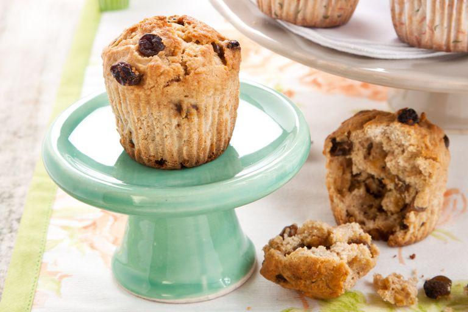

Muffin`s World
Inicio
Historia
Curiosidades
Contactanos
Sucursales
Registrate
Receta de Cocina: Muffins de Naranja y Pasas de Uva
Ingedientes
Cantidad
Productos
180gr
Harina Integral
1 cucharada
Polvo de Hornear
50 gr
Manteca
200 cc
Leche o jugo
1
Huevo
C/n
Ralladura y jugo de naranja
C/n
Pasas de Uva
C/n
Esencia de Vainilla
Procedimiento
En un bol mezclar todos los secos.
Agregar la ralladura de la naranja y las pasas. Unir bien, hacer un hueco en el centro y volcar allí la mezcla de manteca derretida con la leche y el huevo batido.
Tomar la masa del centro a los bordes hasta conseguir una pasta pesada pero fluida.
Rellenar hasta tres cuartos de su capacidad los moldes de muffins previamente forrados con pirotines de papel; y hornear a temperatura moderada por 20 minutos o hasta que al insertar un palillo, éste salga seco.
